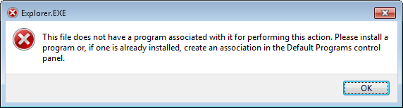

Does not have a program associated with it
Of all the random alerts that Windows shows, this is one of the most annoying:
This file does not have a program associated with it for performing this action. Please install a program or, if one is already installed, create an association in the Default Programs control panel.

This file
Which file?
does not have a program associated with it
for performing this action.
Which action?
Please install a program
Great advice! I will install a program. Which program? For doing what?
or, if one is already installed,
Many programs are already installed... do I need to uninstall all my programs but one??
create an association in the Default Programs control panel.
Create an association between what and who!?